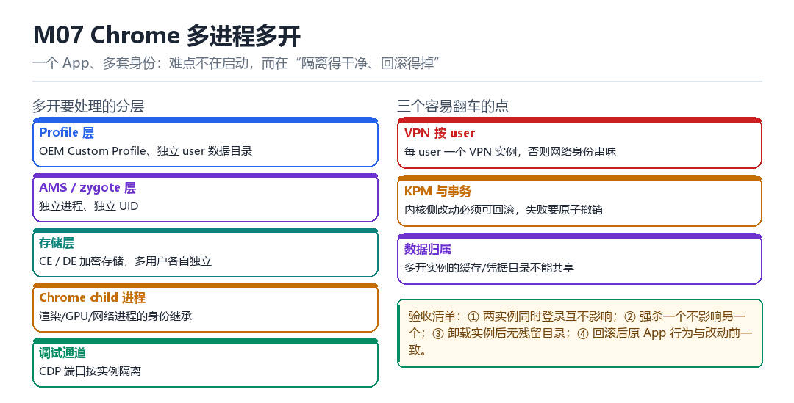

Android Chrome 多进程多开
OEM Custom Profile、AMS/zygote、独立 UID/CE/DE、Chrome child process、CDP、每-user VPN、KPM 与事务回滚
一个 App、多套身份：难点不在启动，而在“隔离得干净、回滚得掉”。
7.1 五层要处理的东西

| 层 | 要处理什么 | 难点 |
|---|---|---|
| Profile 层 | 独立 user 数据目录 | OEM Custom Profile 的兼容 |
| AMS / zygote | 独立进程、独立 UID | 进程复用与回收 |
| 存储层 | CE / DE 加密存储 | 多用户各自独立 |
| Chrome child | 渲染/GPU/网络进程身份继承 | 子进程逃逸隔离 |
| 调试通道 | CDP 端口按实例隔离 | 端口冲突与暴露 |
7.2 三个容易翻车的点
- VPN 按 user：每个 user 一个 VPN 实例，否则两个实例的网络身份会串味。
- KPM 与事务：内核侧改动必须可回滚，失败要原子撤销——半改状态是最难恢复的。
- 数据归属：多开实例的缓存、凭据目录不能共享，否则等于没隔离。
7.3 验收清单
1. 两实例同时登录，互不影响会话
2. 强杀一个实例，另一个继续正常工作
3. 卸载实例后，/data 下无残留目录
4. 回滚后，原 App 行为与改动前完全一致7.11 本章自测
- 多开为什么必须给每个实例独立 UID？
- CE 与 DE 存储的区别是什么？
- KPM 改动为什么要“事务化”？
- 四条验收指标分别验证什么？
7.4 深入：为什么要“每 user 一个 VPN”
Android 的 VPN 是“按 user 生效”的：VPNService 建立的 tun 接口属于某个 user。如果两个多开实例共用同一个 VPN，它们的流量会一起走同一条隧道，网络身份就串了。
| 方案 | 隔离度 | 复杂度 |
|---|---|---|
| 共用 VPN | 无 | 低 |
| 每 user 一个 | 高 | 中 |
| 按 App 分流 | 最高 | 高 |
7.5 实战：验证隔离是否真的生效
# 1. 两个实例的网络出口 IP 是否不同
# 2. 强杀一个，另一个是否存活
# 3. 数据目录是否独立
# 4. 卸载后是否无残留7.6 原理推演：多开的本质是“多套身份”
Android 的隔离建立在“UID + 用户 + 存储目录”这三者上。多开就是“让同一个 App 在不同身份下运行”，所以每一套身份都必须有独立的 UID、独立的存储、独立的进程。
| 维度 | 单实例 | 多开 |
|---|---|---|
| UID | 一个 | 每实例一个 |
| data 目录 | 一个 | 每实例一个 |
| 进程 | 一组 | 每实例一组 |
| VPN | 一个 | 每 user/实例一个 |
只要有一个维度没分开，就会“串味”——表现为“两个实例共享登录态”或“互相能看到对方的数据”。
7.7 数据细节：CE 与 DE 存储
| 存储 | 全称 | 可用时机 |
|---|---|---|
| CE | Credential Encrypted | 解锁后 |
| DE | Device Encrypted | 开机即可用 |
多开实例如果要“开机自启”，就不能只依赖 CE 目录——那时用户还没解锁。这是很多“多开在重启后失效”问题的原因。
7.8 深入：OEM Custom Profile 是什么
部分厂商提供了“应用多开 / 应用分身”的系统能力，本质是“为同一个包创建多个用户档案（profile）”。理解它的实现，比自己从零做多开省力得多——但也受限于它的能力边界。
| 方案 | 实现层 | 能力边界 |
|---|---|---|
| 厂商分身 | 系统级 profile | 受厂商限制 |
| 自建多开 | AMS + UID + 存储 | 完全可控 |
| 虚拟空间 | 应用内虚拟化 | 隔离弱 |
选择依据：如果只是“两个账号”，厂商分身够用；如果需要“完全独立的环境 + 自定义行为”，就得自建。
7.9 深入：Chrome 的 child process 为什么会逃逸隔离
因为 Chrome 的渲染/GPU/网络进程是“由主进程 fork 出来的”，它们继承主进程的 UID 与部分环境。如果隔离逻辑只作用在“主进程启动时”，子进程就可能“继承到不该有的状态”。
ps -A -o PID,PPID,UID,NAME | grep -i chrome
# 看所有 child 的 UID 是否与主进程一致且符合预期7.10 实战：CDP 端口隔离
每个实例如果都开 CDP（Chrome DevTools Protocol），端口必须不同，且不能对外暴露。常见错误是“所有实例都用 9222”，结果第二个实例启动失败或连到了第一个。
port = base_port + instance_index
--remote-debugging-port=<port>
# 并绑定到 127.0.0.1，不要 0.0.0.0